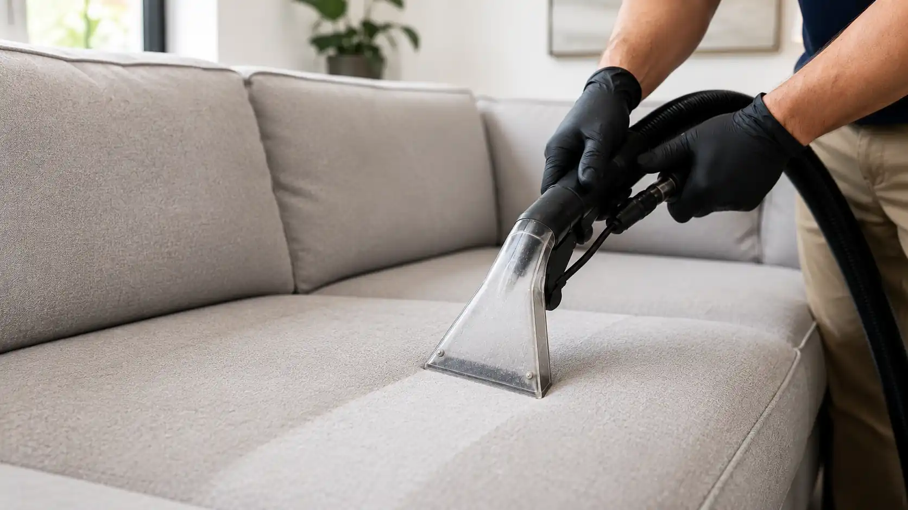
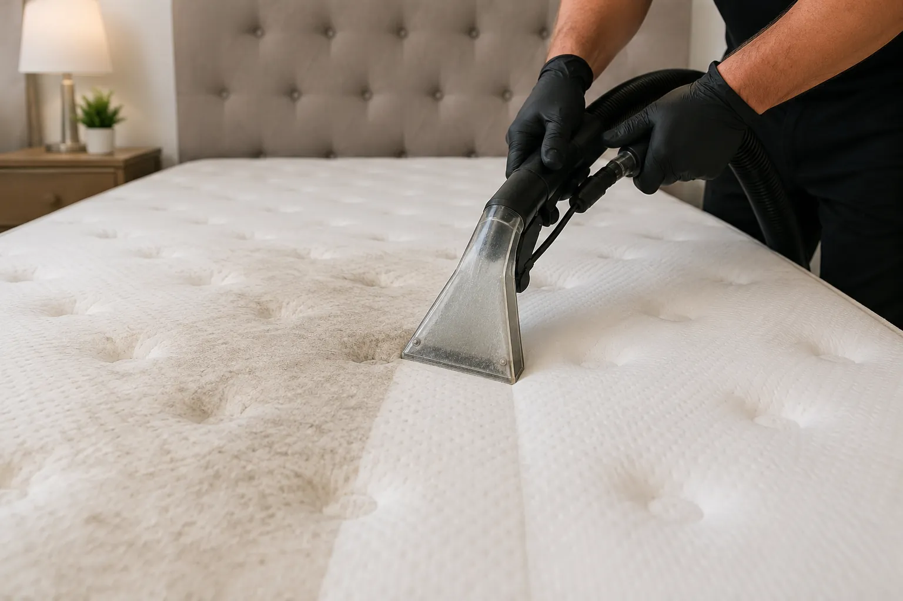
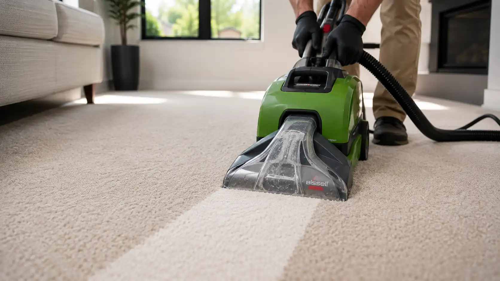
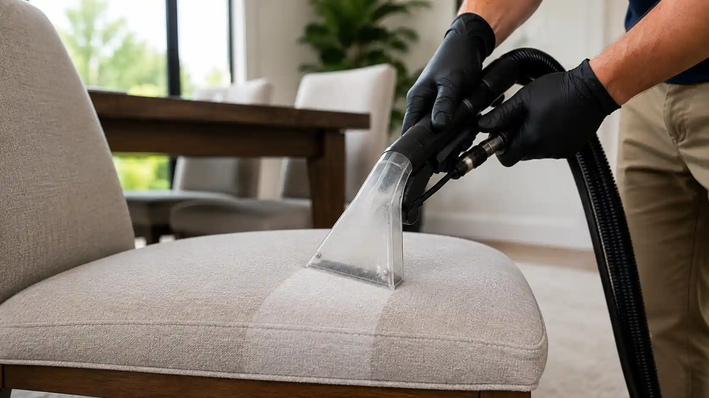
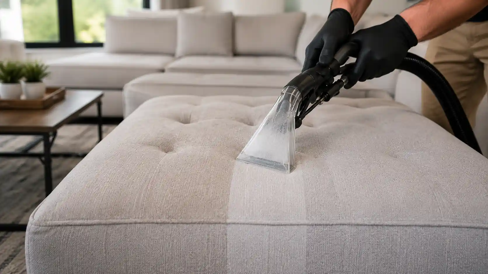

Sofa Cleaning
Our sofa cleaning service helps remove embedded dirt, stains, odors, and everyday buildup from upholstered furniture.
- Deep fabric cleaning
- Stain treatment
- Odor removal
- Professional extraction
Give your furniture and carpets a deeper clean with professional equipment and detailed service designed to refresh your home.

Our sofa cleaning service helps remove embedded dirt, stains, odors, and everyday buildup from upholstered furniture.

Professional mattress cleaning helps refresh the sleeping surface and remove accumulated dirt and odors.

Restore the appearance of your carpets by removing embedded dirt and buildup with professional equipment.

Refresh upholstered dining chairs and remove everyday spills, stains, and buildup from the fabric.

Professional cleaning helps restore upholstered ottomans affected by daily use, dirt, and stains.
Contact Vexa and tell us what you would like cleaned. We can help you choose the right service.
Request a Free Estimate